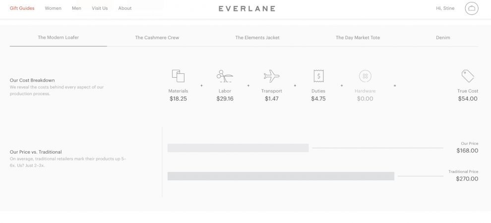
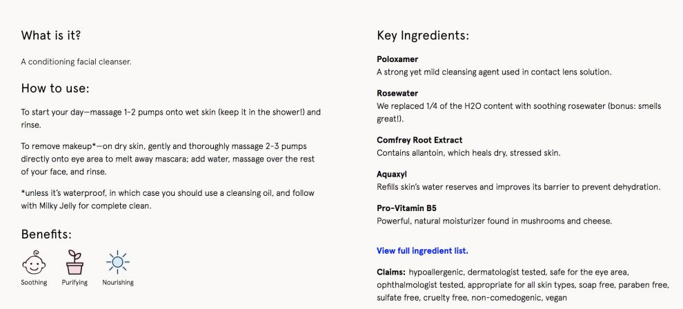
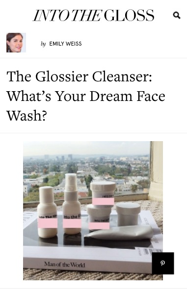

“If this year was about transparency of the journalistic process and how we do our job, next year it will be about transparency of values and why we do our job.”
We know from research one of the primary reasons people pay for news now is for coverage of a specific topic they care about. In 2018, the reason people pay for news will be less transactional and less about the tangible exchange of goods, but instead based on the ~emotional~ relationship a news organization has with its audience. And that emotional connection is built on trust, transparency, and community.
People are increasingly spending money with companies and organizations that are radically transparent, that they connect with, want to belong to, or align with the world they want to live in. And younger people who pay for news are more motivated than older news payers by a desire to support to a news organization’s mission and purpose.
If this year was about transparency of the journalistic process and how we do our job, next year it will be about transparency of values and why we do our job.
1/ Here the steps we took and tools we used for our investigation mapping how the Las Vegas shooting unfolded https://t.co/WGjyimEpDA
— Malachy Browne (@malachybrowne) October 23, 2017
First above is Malachy Browne’s tweet that shared the steps in how The New York Times covered the Las Vegas shooting using so-called video forensics. Then there’s The Washington Post’s new series on how reporting works and explaining the journalism process.
Take companies like Everlane and Spotify.1 Both have paired making great products with building a values-based brand — and in the process created a new kind of connection with their audience news organizations have yet to achieve. Everlane focuses on manufacturing transparency and forgoes traditional retail tactics like sales. Spotify used their policy on parental leave and flex holidays as an opportunity to showcase their values.
Everlane’s About page explains their mission of “radical transparency” and shows it through cost breakdowns and price comparisons of various products.
Other brands like Away and Glossier have found success in leading with the emotional connection and making their community integral to what they do. Away’s president Jen Rubio said luggage brands talked too much about product details and not enough about what inspired people to use them. One of Glossier’s most popular products, the Milky Jelly Cleanser, was crowdsourced from their site. Last year, 79 percent of its sales were from “organic and peer-to-peer and earned sources,” a.k.a. their community.
Away’s About page leads with its mission and the inspiration behind the product. Glossier’s call out for what became the Milky Jelly Cleanser, and the product page for the cleanser lists every ingredient and highlights some with an accompanying explanation for why it’s included.
Social media, from which two-thirds of Americans get their news, has diminished news organizations’ brand, obscuring the values by which they do their work and the resulting connection. People are more likely to remember which platform they they found content on than the news brand that produced it. News organizations will need to continue the radical transparency of how we do the work, but also couple that with the why.
Taken together, articulating and acting on clear values alongside an aggressive commitment to transparency and community can be a roadmap for news organizations wanting to rebuild and strengthen trust and the emotional relationship with its audience.